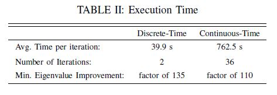

Project Overview
The goal of this project was to reformulate the optimization algorithm from the double pendulum experiment which uses continuous-time to one using structured integration and structured linearization methods from discrete mechanics. However, the algorithm can be slow to implement because of the need for small time steps using the continous formulation. Using a result of much recent work in the area of discrete mechanics, variational integrators, also known as structured integrators, can be used to provide a time-discretized version of the action integral which results in a symplectic form with stable long-term energy behavior, even with large time-steps.
Algorithm Details
In the discrete time format, given a system with a configuration $q\in Q$, where $Q$ is the configuration space, a sequence $\{(t_0, q_0),(t_1,q_1),...,(t_n,q_n)\}$ can be found that approximates a trajectory in continuous time where $q_k\approx q(t_k)$. Instead of numerically integrating differential equations derived from a continuous Lagrangian, $L_c$, a discrete Lagrangian, $L_d$, is chosen such that the action integral is approximated over a discrete time-step.
Given the discrete action sum, the DEL equations including forcing have been derived for the discrete-time system by Marsden and West (2001). The unconstrained DEL equations are given by $$D_2L_d(q_{k-1},q_k,\theta)+F_d^+(q_{k-1},q_k,u_{k-1},\theta)+D_1L_d(q_k,q_{k+1},\theta)+F_d^-(q_k,q_{k+1},u_{k},\theta)=0$$ where $F_d^\pm$ are the right and left discrete force approximations of a continuous forcing model, $F_c$.
In order to create a suitable analog to the continuous time framework, the DEL equations can be rewritten in a one-step map using a discrete momentum term, $p_k$. The first equation is implicit in terms of $q_{k+1}$ and is solved using a root-finding algorithm. The following is the one-step update of $\{q_k, p_{k+1}\}$ $$p_k+D_1L_{k+1}+F^-_{k+1}=0$$ $$p_{k+1}=D_2L_{k+1}+F^+_{k+1}$$
Using these discrete system states, the same trajectory optimization algorithm is used in the results to follow as the continuous-time case; however, the algorithm itself has been reformulated into a discrete-time framework. This discrete-time version is extended in the following section to include Fisher information as an additional objective.
 Full details of the algorithm itself can be found in the paper: "Maximizing Fisher Information Using Discrete Mechanics and Projection-Based Trajectory Optimization"
Full details of the algorithm itself can be found in the paper: "Maximizing Fisher Information Using Discrete Mechanics and Projection-Based Trajectory Optimization"
Project Results
 The optimized trajectory improves the Fisher information of the measured trajectory by a factor of 102. These results can be seen in the table. Using the Cramer-Rao bound, error estimates in the parameter set will decrease up to a factor of 102 due to this increase in Fisher information. While these results show the discrete-time algorithm converging in fewer iterations, we do not expect this trend to be generally true. In this case, the numerical differences happen to produce a slightly more efficient descent direction. However, even on a per iteration basis, the improvement in computation time is significant. Iterations of the continuous and discrete algorithms were timed in Mathematica on the same 3.0GHz Intel i7 machine. Both algorithms return similar optimized costs, resulting in expected information improvements of 102.